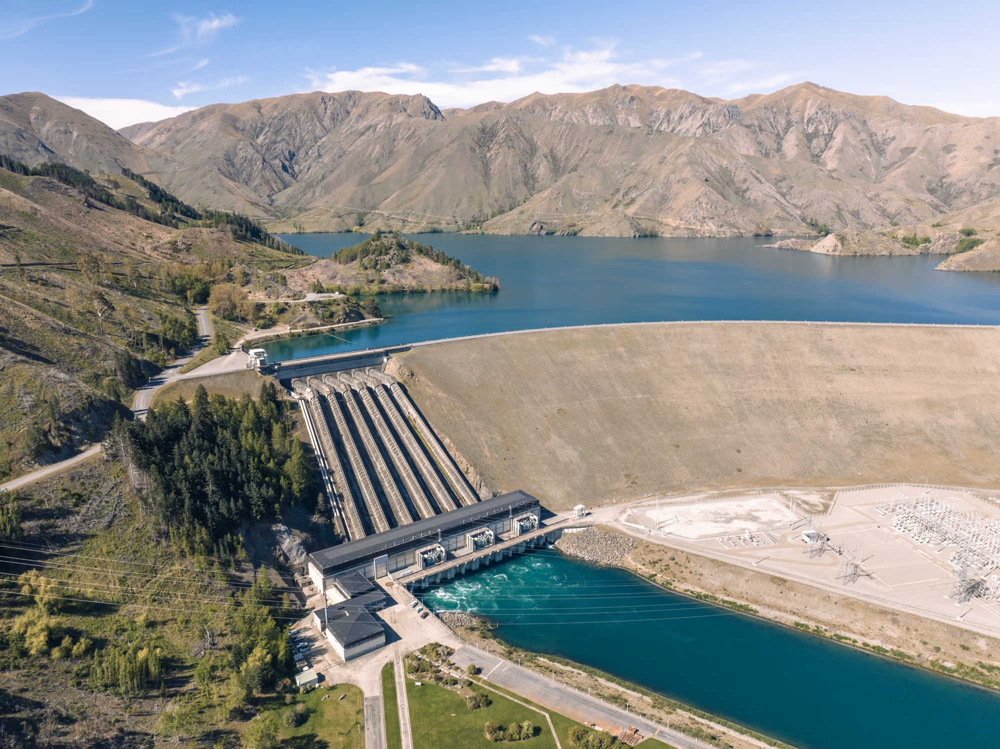
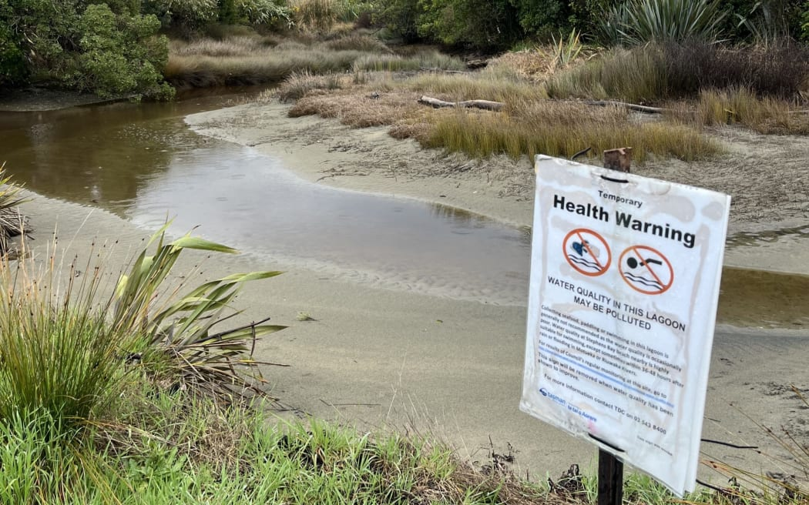
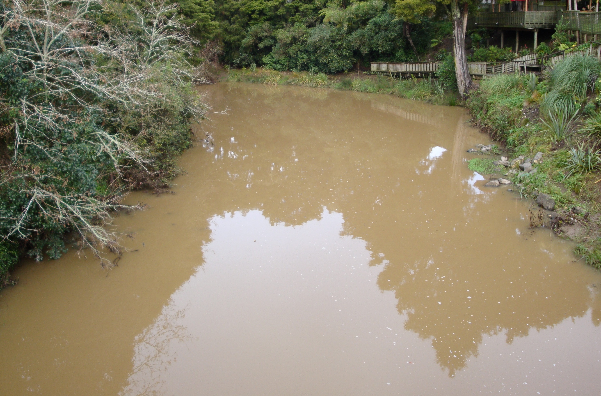

Changing flows
In New Zealand, changing natural river flows for dams, farming, drinking water, and river diversion can have significant environmental impacts. When flows are reduced, stabilised, or changed, sediment can build up or wash away unevenly, altering habitats and water clarity. Native fish and invertebrates often depend on seasonal flow changes for migration and breeding, so disruption can limit their survival. These changes can also affect water quality and reduce the river’s resilience, ultimately impacting ecosystems, cultural values, and communities that rely on healthy waterways.

Pathogens
Pathogens are microorganisms such as bacteria, viruses, and parasites, that can harm both people and wildlife in rivers. In New Zealand, they get into waterways from farm runoff, wastewater, and stormwater. For wildlife, high pathogen levels can weaken or sicken native fish, birds, and invertebrates, making it harder for them to survive and reproduce. Contaminated water can also reduce food availability by damaging aquatic insects and plants. Over time, this disrupts the balance of river ecosystems.

Nutrient Pollution
Nutrient pollution happens when too much nitrogen and phosphorus enter rivers from sources such as fertiliser runoff, farm waste, and wastewater. In New Zealand rivers, this can trigger excessive algae growth, which clouds the water and reduces light for native plants. This creates poor habitat conditions for wildlife. As the algae die and break down, oxygen levels drop, making it harder for fish and aquatic insects to survive. Some algal blooms can also produce toxins that harm birds and other animals. Over time, nutrient pollution disrupts natural ecosystems, reducing biodiversity and weakening the health of river environments.

Sedimentation
Sedimentation occurs when soil and fine particles are washed into rivers, often from erosion caused by farming, construction, or deforestation. Heavy rain can carry this sediment into waterways, making the water cloudy and reducing light penetration. This can have serious effects: sediment can smother habitats, clog the gills of fish, and cover spawning areas where eggs are laid. It reduces the availability of food by damaging aquatic plants and insects. Over time, increased sedimentation disrupts river ecosystems, making it harder for native species to survive and thrive.